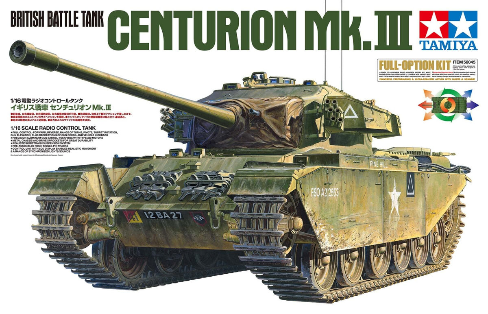
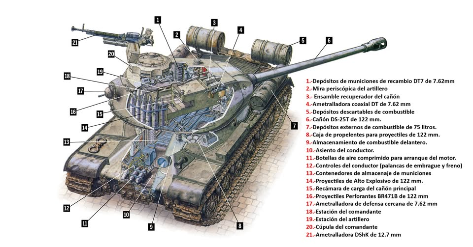
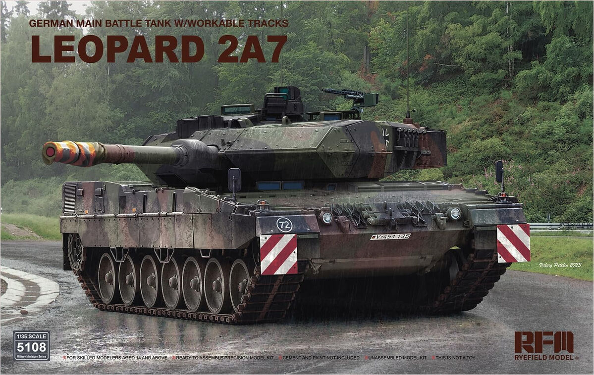

El concepto MBT
Hoy en día ya no existen tanques ligeros, medios o pesados. Todos han sido sustituidos por el concepto de MBT (Main Battle Tank o Carro de Combate Principal). El primero de esta era moderna suele considerarse el Centurion británico, pero hoy dominan sistemas 100% digitales que pueden disparar en movimiento gracias a estabilizadores giroscópicos.

Los Cañones
La OTAN ha estandarizado los cañones de ánima lisa de 120 mm (como el fabricado por Rheinmetall). Al no tener estrías en el tubo, pueden disparar proyectiles APFSDS (dardos perforantes de uranio empobrecido o tungsteno) que viajan a más de 1.700 metros por segundo, penetrando el acero como si fuera mantequilla.

El Tanque más temible
El Leopard 2A7+ alemán y el M1A2 SEPv3 Abrams estadounidense se disputan la corona. Cuentan con cámaras térmicas, radares para interceptar misiles antes de que impacten (Sistemas de Protección Activa) y un blindaje reactivo compuesto (Chobham) capaz de resistir impactos directos que harían pedazos a cualquier tanque de la Segunda Guerra Mundial.
